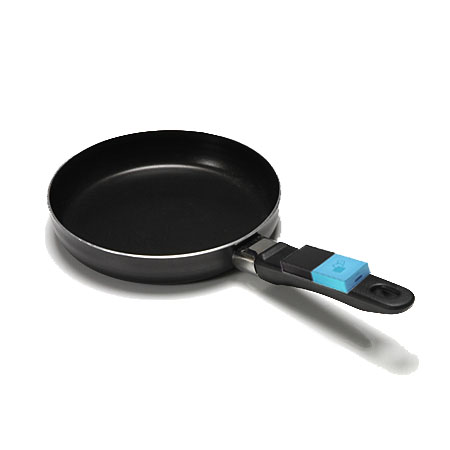
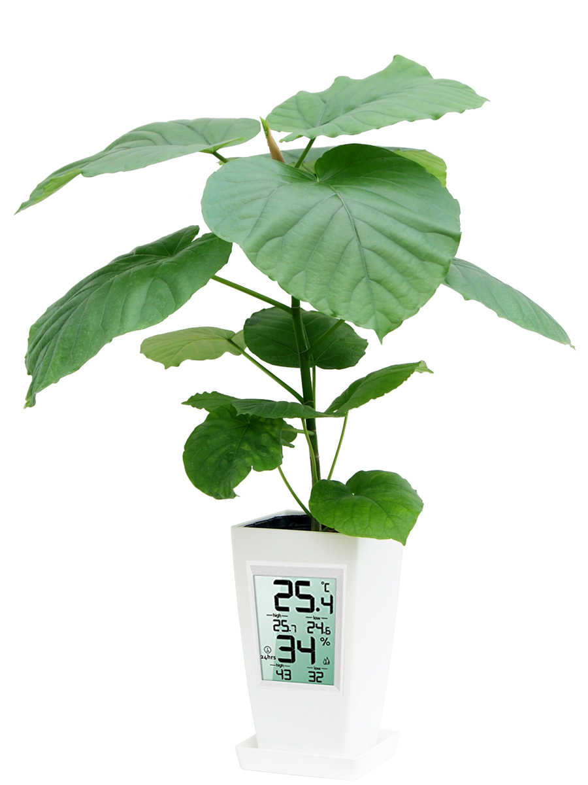

mesh

メッシュというものが配られた。班に1ケース。
…そう。今回はグループワーク。すでにそこまで苦手ではない、程度には克服した気はするが、苦手意識というものは中々抜けない。
メッシュは簡単に説明すると、IoT製品開発の種…だろうか。センサーなどを使った製品のプロトタイプをかなり手軽に試作出来るようになる、
そんな感じのシロモノだ。
例をあげて説明すると、玄関を通ったら（人感）電気が付く（明るさ）のような仕組みが実現出来る。
この場でIoTブロックの機能を一つ一つ紹介してもキリがないので、詳しくはメッシュの
サイト
を見て欲しい。
初日
ご飯班に入れられた。
そこまで食いしん坊じゃない。
マインドマップにお茶漬けとうどん蕎麦書いただけで問答無用で入れられた。解せん。
まーいーや。
今回の活動は二日間に渡って行われた。
最初に問題を探し、それを解決できる製品のプロトタイプを試作する授業、次にその授業での発見や反省を活かしもう一度製品開発する授業。
ここでは最初の授業について書き記す。
ご飯班は介護と料理を結びつけ、介護に役立つような調理道具を考えた。この日に提案した案の中では
「私たちの両親世代が介護される頃には監視カメラなどに激しい嫌悪を抱く人も多分居るだろう、自分だったらそうだ。
なので、カメラ無しで生存や行動の大まかな確認がとれる仕組みがあるといいのでは」
という意見が一番共感を得られた。提案は受理され、調理道具を使用中、傾きや熱などの種類に関わらず、
『センサー』の稼働中に介護者に料理中だと知らせる仕組みが組み込まれた。
この日の提案は、問題解決よりもmeshを使った道具の考案に片寄っていた気がする。そのせいか、5、6出した案のほとんどは数合わせのようなものだった。
成果物は調理道具の使用中、傾きや重さを感知しスピーカーで助言や注意喚起を行い、介護者の元に調理道具を使用中と知らせる、というもの。

他にも、湿度温度センサーを利用した、植物の周囲環境を数値化する製品が第二案としてあがった。

2日目
班員にめっさ纏めてくれる子が来てくれた。安泰だった。

…別に働かなかったわけではない。分担作業の他に、提案として
入り口から人が入ったら
→レジに店員を呼ぶ
use:人が通ったら・効果音を発生する
入り口と出口を別に分け、入り口を通った人を人感センサーで検知する。
店側に入り口を通った時点で入店を知らせることで、会計に即座に対応出来る
merit：
入店した客に即座に対応出来る
ついでに人数と時間をスプレッドシートに記録すれば、時間帯と曜日ごとの大体の入店数が予想出来る
mesh:人感・スマホ
などの提案を行った。この日は案の数、質共に前回以上の貢献が出来たと思う。
あと、相変わらずだが書記係のようなことをした。とは言っても、班員の提案を同一形式で纏め、メリットやデメリット、
使用するメッシュと機器を考えて書いたり、といった程度のことだったが。
成果物としては、ビュッフェスタイルのレストランそのものが出来た。
人の手があまり必要でないのが特徴で、目標の『メンテナンスに一人だけ』とまではいかなかったが、中々に近代的なレストランが出来た。
リンク先はレストランを考えるときに建てられたslackのチャンネル。
私が書いた文や班員が撮った写真、動画が残っている。恐らく閲覧自由だ。
まとめ
便利なものだが、初日は課題をこなすため要らなさそうな機能も追加する、などの事態が発生した。
いつか、「試作品作りたいのでmesh借りても良いですか」とかいう申請を誰かが出す日が来るのだろうか。
恐らくその日は着々と近付いている。誰かが、大きな一歩を踏み出すような日が。
自分が、などとは思わないが、置いていかれないように、引き離されないようにしなくては。